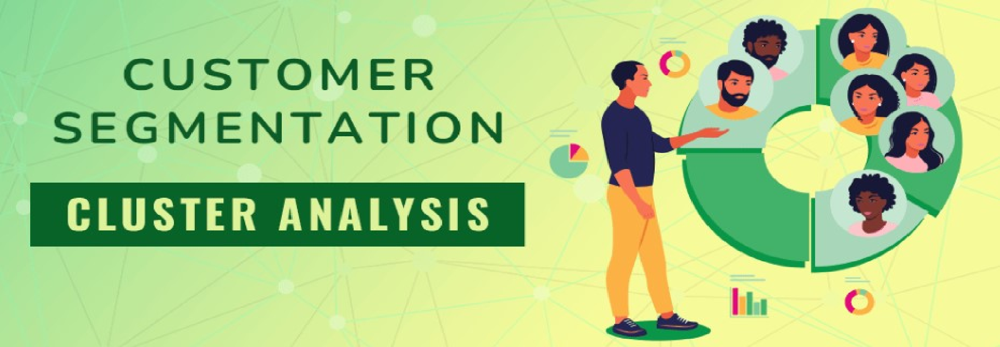

The project leverages advanced statistical techniques and machine learning models to predict future sales and support strategic decision-making in the industry.

This project applies machine learning techniques to segment customers based on their purchasing behaviors.

Leveraged cross-functional collaboration and machine learning to improve customer experience by identifying and reducing negative customer feedback by over 30% through improved sentiment model retrainin and deployment.

A Data-Driven Approach to Financial Market Prediction and Investment Strategy Optimization.
This project focuses on predicting the prices of used cars using machine learning techniques. By leveraging advanced feature engineering, dimensionality reduction, and multiple machine learning models, the goal is to create a reliable prediction system to help buyers and sellers in the used car market.
The primary objective of this analysis is to explore the hypothesis suggesting that Rides originating from Baylis Road, Waterloo Station in 2014 were shorter compared to rides originating from alternative stations using Big Data-Apache Spark.